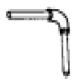
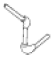
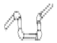
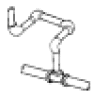
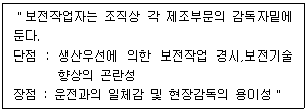

에너지관리기능장 (2005-04-03 기출문제)
1과목: 임의 구분
1. 다음 내화물 중 산성내화물인 것은?
- 마그네시아질
- 탄소질
- 탄화 규소질
- 규석질
(정답률: 59%)

2. 다음 배관 중 스위블형 신축이음이라고 볼 수 없는 것은?




(정답률: 91%)
3. 다음 중 보일러 청관제로서 슬러지 조정제로 사용되는 것은?
- 전분
- 가성소다
- 인산소다
- 히드라진
(정답률: 69%)
4. 피복 아크 용접에서 자기 쏠림 현상을 방지하는 방법으로 옳은 것은?
- 용접봉을 굵은 것으로 사용한다.
- 접지점을 용접부에서 멀리한다.
- 용접 전압을 높여준다.
- 용접 전류를 높여준다.
(정답률: 91%)
5. 내화물이 융회 등을 흡수하여서 표면의 용융점이 내려가서 유출되든가, 혹은 융회 중에 용해하여 점차 줄어드는 현상은?
- 연화변형
- 열적 스폴링
- 구조적 스폴링
- 융액침식
(정답률: 71%)
6. 배관의 신축이음 종류 중 고온, 고압용의 옥외배관에 많이 사용되며, 응력이 크게 작용하는 것은?
- 슬리브형
- 루프형
- 벨로즈형
- 스위블형
(정답률: 68%)
7. 수관식 보일러에서 그을음을 불어내는 장치인 슈트블로우의 분무 매체로 사용되지 않는 것은?
- 기름
- 증기
- 물
- 공기
(정답률: 93%)
8. 과열기를 가진 보일러에서 과열증기의 압력은 포화증기의 압력에 비하여 어떠한가?
- 과열증기 압력이 높다.
- 동일하다.
- 과열증기 압력이 낮다.
- 조건에 따라 다르다.
(정답률: 60%)
9. 오르자트 가스분석기로 직접 분석할 수 없는 성분은?
- O2
- CO
- CO2
- N2
(정답률: 89%)
10. 보일러의 압력계 부착 방법을 잘못 설명한 것은?
- 증기온도가 120℃ 가 넘을 때는 동관을 사용해야 한다.
- 압력계와 연결된 증기관은 동관일 경우 안지름 6.5 mm 이상이어야 한다.
- 압력계의 콕 대신에 밸브를 사용할 경우에는 한 눈에 개폐 여부를 알 수 있는 구조로 한다.
- 물이 채워진 상태로 안지름 6.5 mm 이상의 사이펀관을 거쳐 압력계를 부착한다.
(정답률: 81%)
11. 어떤 연료 3 kg 으로 2,070 kg 의 물을 가열시켰더니 온도가 10℃ 에서 20℃ 로 되었다. 이 연료의 발열량은? (단, 가열장치의 열효율은 80 % 이다.)
- 6,900 kcal/kg
- 8,625 kcal/kg
- 2,587 kcal/kg
- 9,834 kcal/kg
(정답률: 44%)
12. 공기비(m)가 큰 경우 배기가스 중의 함유 비율이 커지는 것은?
- SO2
- CO
- O2
- CO2
(정답률: 62%)
13. 유체의 레이놀즈(Reynolds)수가 얼마 이상이면 난류라고 하는가?(오류 신고가 접수된 문제입니다. 반드시 정답과 해설을 확인하시기 바랍니다.)
- 3,000
- 2,000
- 1,000
- 550
(정답률: 64%)
14. 피드백 자동제어의 중심부분으로 동작신호를 받아서 제어계가 정해진 동작을 하는데 필요한 신호를 만들어 내보내는 부분은?
- 조절부
- 조작부
- 비교부
- 검출부
(정답률: 71%)
15. 다음 중 보일러 관수의 탈산소제가 아닌 것은?
- 아황산소다
- 암모니아
- 탄닌
- 히드라진
(정답률: 81%)
16. 펌프의 공동현상(cavitation)에 의하여 발생하는 현상 설명으로 틀린 것은?
- 부식 또는 침식이 발생한다.
- 운전불능이 될 수도 있다.
- 소음 및 진동이 발생한다.
- 양정 및 효율이 상승한다.
(정답률: 92%)
17. 보일러 화염검출기인 플레임 아이(flame eye)는 화염의 어떠한 성질을 이용하여 화염 검출을 하는가?
- 화염의 스파크를 이용
- 화염의 이온화를 이용
- 화염이 발광체임을 이용
- 화염이 발열체임을 이용
(정답률: 75%)
18. 배관의 상부에서 관을 지지하는 것으로, 관의 상하 방향이동을 허용하면서 일정한 힘으로 관을 지지하는 것은?
- 콘스탄트 행거
- 리지드 행거
- 슈
- 앵커
(정답률: 83%)
19. 강철제 증기보일러의 전열면적이 10 m2를 초과하는 경우 급수밸브의 크기는 얼마 이상이어야 하는가?
- 15 A
- 20 A
- 30 A
- 40 A
(정답률: 73%)
20. 유체속에 잠겨진 경사면에 작용하는 힘은?
- 경사진 각도에만 관계된다.
- 유체의 비중량과 단면적의 곱과 같다.
- 단면적의 크기와 경사각에 비례한다.
- 면의 중심점에서의 압력과 면적과의 곱과 같다.
(정답률: 71%)
2과목: 임의 구분
21. 충동 증기 트랩을 옳게 설명한 것은?
- 높은 온도의 응축수 증발로 인하여 생기는 부피의 증가를 이용한 것
- 부력을 이용하여 밸브를 개폐하는 것
- 휘발성이 큰 액체를 봉입한 것을 이용한 것
- 저온의 공기를 통과시키며 관말 트랩으로 사용한 것
(정답률: 68%)
22. 자동제어에서 목표값이 의미하는 것은?
- 제어량에 대한 희망값
- 조절부의 조절값
- 동작 신호값
- 기준 입력값
(정답률: 70%)
23. 압력을 표시하는 수주(水柱)의 단위로 옳은 것은?
- psi
- mmHg
- mmAq
- kgf/cm2
(정답률: 71%)
24. 보일러 건조 보존 시에 흡습제로 사용할 수 있는 물질은?
- 히드라진
- 아황산소다
- 생석회
- 탄산소다
(정답률: 87%)
25. 증기보일러에서 순환수량과 증기발생량의 비는?
- 순환비
- 관류비
- 증발배수
- 증발계수
(정답률: 60%)
26. 보일러 가성취화의 특징을 설명한 것으로 틀린 것은?
- 방향이 불규칙적이다.
- 반드시 수면 이하에서 발생한다.
- 압축응력을 받는 이음부에서 생긴다.
- 리벳과 리벳 사이에서 발생되기 쉽다.
(정답률: 36%)
27. 목표값이 변화하지 않고 일정한 값을 갖는 자동제어는?
- 추종제어
- 비율제어
- 프로그램 제어
- 정치제어
(정답률: 72%)
28. 다음 밸브 중 핸들을 90° 회전시켜 개폐 조작이 가능한 것은?
- 슬루스 밸브
- 게이트 밸브
- 체크 밸브
- 볼 밸브
(정답률: 85%)
29. 압력 3 kg/cm2에서 물의 증발잠열이 517.1 kcal/kg 이며, 포화온도는 132.88℃ 이다. 물 5kg 을 3kg/cm2 하에서 증발시킬 때 엔트로피의 변화량은?
- 6.37 kcal/K
- 8.73 kcal/K
- 1.32 kcal/K
- 4.42 kcal/K
(정답률: 40%)
30. 캐스터블 내화물을 옳게 설명한 것은?
- 내화성 골재에 수경성 알루미나 시멘트를 배합한 것
- 내화성 골재에 가소성 점토를 가하여 배합한 것
- SiO2 를 휘발시키고 정제하여 결합제를 가하여 성형한 것
- MgO 를 천연 광석과 함께 분쇄한 후 물, 유리를 가하여 소성한 것
(정답률: 65%)
31. 온수 귀환 방식에서 각 방열기에 공급되는 유량 분배를 균등히 하여 선, 후 방열기의 온도차를 최소화시키는 방식으로 환수관 길이가 길어지는 방식은?
- 중력귀환 방식
- 강제귀환 방식
- 역귀환 방식
- 직접귀환 방식
(정답률: 91%)
32. 원심식 송풍기의 풍량을 Q(m3/min), 회전수 N(rpm), 풍압을 P(mmAq), 날개의 직경을 D 라고 할 때, 다음 관계식 중 틀린 것은?
- Q∝N
- Q∝D3
- P∝N
- P∝D2
(정답률: 74%)
33. 보일러에서 선택적 케리 오버( carry over )의 원인이 되는 원소의 종류는?
- 나트륨(Na)
- 마그네슘(Mg)
- 실리카(Si)
- 칼숨(Ca)
(정답률: 82%)
34. 슬루스 밸브에 관한 설명으로 틀린 것은?
- 리프트가 커서 개폐에 시간이 걸린다.
- 밸브를 중간 정도만 열어도 마찰저항이 없으므로 유량 조절용으로 적합하다.
- 밸브를 완전히 열면 밸브 본체 속이 관로의 단면적과 거의 같게 된다.
- 쐐기형의 밸브 본체가 밸브 시트 안을 눌러 기밀을 유지한다.
(정답률: 70%)
35. 보일러 및 열교환기용 합금강 강관의 KS 기호는?
- STH
- STHA
- STLT
- STS X TB
(정답률: 74%)
36. 400℃ 이하의 파이프, 탱크, 노벽 등의 보온재로 적합하며, 진동이 심한 곳에서도 사용이 가능하지만, 800 ℃에서는 강도와 보온성을 상실하는 보온재는?
- 규조토
- 탄산 마그네슘
- 석면
- 암면
(정답률: 54%)
37. 안지름이 500mm 인 관속을 매초 2m 의 속도로 유체가 흐를 때 단위 시간당의 유량은?
- 0.39 m3/h
- 23.4 m3/h
- 524.3 m3/h
- 1,414 m3/h
(정답률: 43%)
38. 어떤 보일러의 성능시험 결과 급수량이 2,000 kg/h, 급수온도 15℃, 증기 온도 1⑤℃, 증기의 엔탈피 640 kcal/kg 이었다. 이 보일러의 상당 증발량은?
- 334 kg/h
- 1,985 kg/h
- 2,319 kg/h
- 2,000 kg/h
(정답률: 44%)
39. 대류(對流)열전달 방식을 2가지로 옳게 구분한 것은?
- 자유대류와 복사대류
- 강제대류와 자연대류
- 열판대류와 전도대류
- 교환대류와 강제대류
(정답률: 84%)
40. 안지름 0.1m, 길이 100m 인 파이프에 물이 흐르고 있다. 파이프의 마찰손실계수를 0.015, 물의 평균속도가 10 m/s 일 때 나타나는 압력손실은?
- 5.65 kg/cm2
- 6.65 kg/cm2
- 7.65 kg/cm2
- 8.65 kg/cm2
(정답률: 45%)
3과목: 임의 구분
41. 보일러 케리 오버(carry over)에 대한 설명으로 가장 옳은 것은?
- 대량의 거품이 일어나는 포밍(forming)현상이다.
- 수분과 증기가 비등하는 프라이밍(priming) 현상이다
- 보일러수 중에 용해된 물질이나 수분이 증기와 동반해서 증기관으로 반출되는 현상이다.
- 보일러수에 용해된 유지분 등이 동 내면에 고착하는 현상이다.
(정답률: 72%)
42. 연간 에너지 사용량(연료 및 열과 전력의 합)이 얼마 이상이면 시 · 도지사에게 신고하여야 하는가?
- 2천 티·오·이
- 1천5백 티·오·이
- 1천 티·오·이
- 2천5백 티·오·이
(정답률: 84%)
43. 보일러수에 함유되어 있는 물질 중 스케일 생성 성분이 아닌 것은?
- 황산 칼슘
- 황산 마그네슘
- 탄산 마그네슘
- 탄산소다
(정답률: 82%)
44. 다음 중 관류보일러에 속하는 것은?
- 케와니 보일러
- 벤슨 보일러
- 코르니쉬 보일러
- 바브콕 보일러
(정답률: 66%)
45. 다음 보온재 중 최고 안전사용온도가 가장 높은 것은?
- 세라믹 파이버
- 펠트
- 그라스 울
- 폴리우레탄폼
(정답률: 84%)
46. 온수난방에서 시동 전에 물의 평균밀도가 0.9957 ton/m3이고, 난방 중 온수의 평균밀도가 0.9828 ton/m3 인 경우 시동 전에 비해 온수의 팽창량은 약 몇 ℓ 인가? (단, 온수시스템 내의 가동 전 보유수량은 2.28 m3 이다.)
- 20ℓ
- 30ℓ
- 40ℓ
- 50ℓ
(정답률: 46%)
47. 보일러 설치시공기준 상 보일러를 옥내에 설치하는 경우 보일러 및 보일러의 금속제 연도 등으로부터 몇 m 이내에 있는 가연성 물체에 대하여는 불연성 재료로 피복하여야 하는가?
- 0.3 m
- 0.6 m
- 0.9 m
- 1.2 m
(정답률: 47%)
48. 원통보일러의 급수 pH로 적정한 것은?
- 10.0 – 11.8
- 5.0 - 6.5
- 12.0 – 13.0
- 7.0 - 9.0
(정답률: 55%)
49. 1 kW 로 1 시간 일한 것은 몇 kcal 의 열량에 해당되는가?
- 860 kcal
- 632 kcal
- 552 kcal
- 486 kcal
(정답률: 72%)
50. 보일러를 청소하기 위한 냉각방법으로 가장 옳은 것은?
- 운전을 정지한 후 보일러수를 한꺼번에 배출시키고 냉각시킨다.
- 보일러수를 배출시키는 한편 차가운 물을 급수하여 냉각시킨다.
- 운전을 서서히 계속하여 증기를 완전히 배출시킨 후 차가운 물을 급수하여 냉각시킨다.
- 보일러 수위를 표준수위로 유지시켜 운전을 정지한 후 자연냉각시킨다.
(정답률: 79%)
51. 보일러의 과열기 온도가 일반적으로 약 몇 도 이상이 되면 바나듐에 의한 고온부식이 발생하는가?
- 300 ℃ 이상
- 350 ℃ 이상
- 500 ℃ 이상
- 950 ℃ 이상
(정답률: 64%)
52. 열정산에서 출열 항목에 속하는 것은?
- 증기의 보유 열량
- 공기의 보유 열량
- 연료의 현열
- 화학 반응열
(정답률: 78%)
53. 수관 보일러에서 강제순환식이 자연순환식보다 유리한 점을 설명한 것으로 틀린 것은?
- 동일한 증발량에 대해 소형경량으로 제작할 수 있다.
- 관수의 농축 속도가 느려서 스케일 생성이 늦다.
- 순환펌프를 사용하므로 열전달이 높고 기동이 빠르다.
- 수관군의 배열에 신경 쓸 필요가 없으므로 자유로운 설계를 할 수 있다.
(정답률: 58%)
54. 보일러수 관내처리 방법으로 청관제를 투입하는 방법이 있는데 청관제를 사용하는 목적이 아닌 것은?
- 고착 스케일 제거
- 기포방지
- 가성취화 억제
- pH, 알칼리도 조정
(정답률: 72%)
55. 원재료가 제품화 되어가는 과정 즉 가공, 검사, 운반, 지연, 저장에 관한 정보를 수집하여 분석하고 검토를 행하는 것은?
- 사무공정 분석표
- 작업자공정 분석표
- 제품공정 분석표
- 연합작업 분석표
(정답률: 73%)
56. 수요예측 방법의 하나인 시계열분석에서 시계열적 변동에 해당되지 않는 것은?
- 추세변동
- 순환변동
- 계절변동
- 판매변동
(정답률: 68%)
57. 다음 중 검사를 판정의 대상에 의한 분류가 아닌 것은?
- 관리 샘플링검사
- 로트별 샘플링검사
- 전수검사
- 출하검사
(정답률: 67%)
58. nP관리도에서 시료군마다 n=100 이고, 시료군의 수가 k=20이며, ΣnP = 77이다. 이때 nP관리도의 관리상한선 UCL을 구하면 얼마인가?
- UCL = 8.94
- UCL = 3.85
- UCL = 5.77
- UCL = 9.62
(정답률: 40%)
59. 다음 내용은 설비보전조직에 대한 설명이다. 어떤 조직의 형태인가?

- 집중보전
- 지역보전
- 부문보전
- 절충보전
(정답률: 73%)
60. 파레토그림에 대한 설명으로 가장 거리가 먼 내용은?
- 부적합품(불량), 클레임 등의 손실금액이나 퍼센트를 그 원인별, 상황별로 취해 그림의 왼쪽에서부터 오른쪽으로 비중이 작은 항목부터 큰 항목 순서로 나열한 그림이다.
- 현재의 중요 문제점을 객관적으로 발견할 수 있으므로 관리방침을 수립할 수 있다.
- 도수분포의 응용수법으로 중요한 문제점을 찾아내는 것으로서 현장에서 널리 사용된다.
- 파레토그림에서 나타난 1∼2개 부적합품(불량) 항목만 없애면 부적합품(불량)률은 크게 감소된다.
(정답률: 51%)